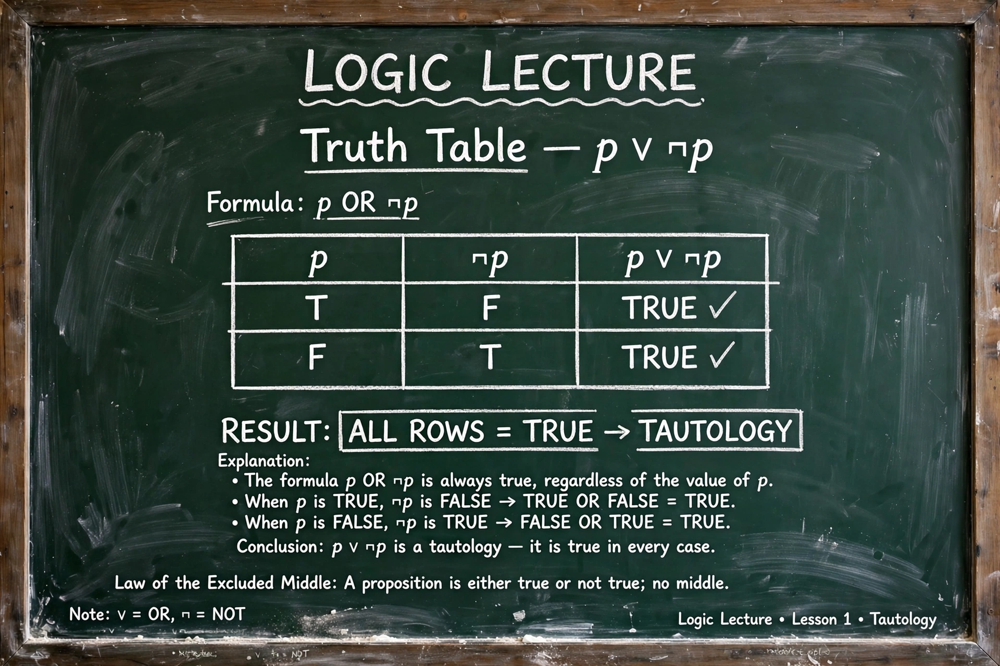

Tautology (logic)
In mathematical logic, a tautology is a formula or assertion that is true in every possible interpretation. A tautology is the opposite of a contradiction, which is false in every interpretation. Examples include "either it will rain tomorrow, or it will not rain" (the law of excluded middle, p ∨ ¬p) and "if a implies b, and a is true, then b is true". In propositional logic, tautologies can be identified mechanically by truth tables.

Definition
Formally, a formula of propositional logic is a tautology if it evaluates to true under every assignment of truth values to its propositional variables. A formula is satisfiable if it is true under at least one assignment, and a contradiction if under none. In first-order logic, the corresponding notion is logical validity: a formula true in every model. By Gödel's completeness theorem, the valid first-order formulas are exactly those derivable in a standard proof system, but unlike the propositional case there is no algorithm that decides validity in general.
History
The word comes from the Greek tautologia ("saying the same thing"), long used in rhetoric for redundant statements. Its logical sense was developed in the early twentieth century: Ludwig Wittgenstein, in the Tractatus Logico-Philosophicus (1921), held that all propositions of logic are tautologies that "say nothing" about the world, an idea taken up by the logical positivists. Earlier, the notion was implicit in the work of Frege, Peano, and Russell and Whitehead's Principia Mathematica.
Checking tautologies
Determining whether a propositional formula is a tautology is the complement of the Boolean satisfiability problem (SAT) and is co-NP-complete in general, though truth tables suffice for small formulas. Tautology-checking is central to automated theorem proving, hardware verification, and logic minimization in circuit design.